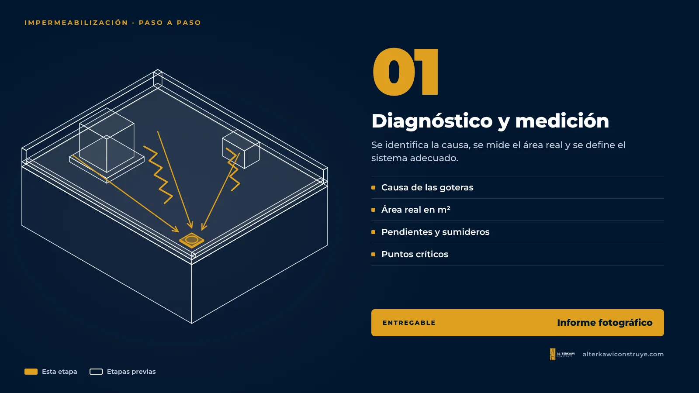
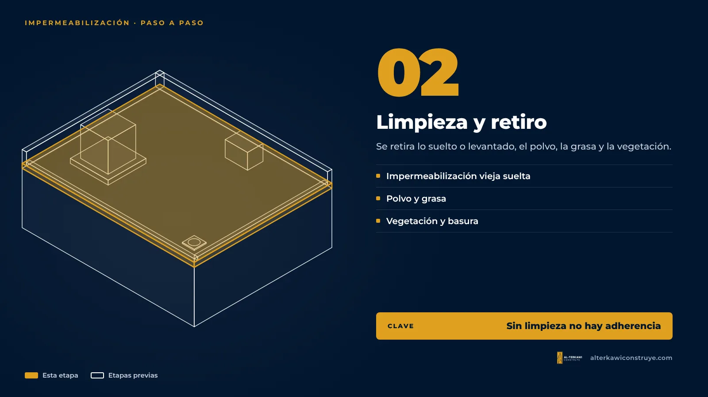
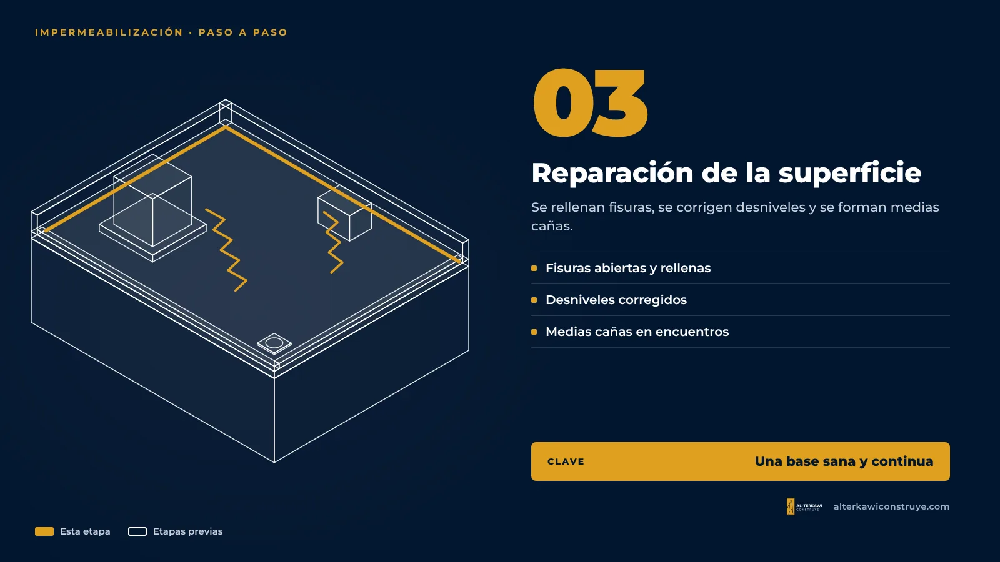
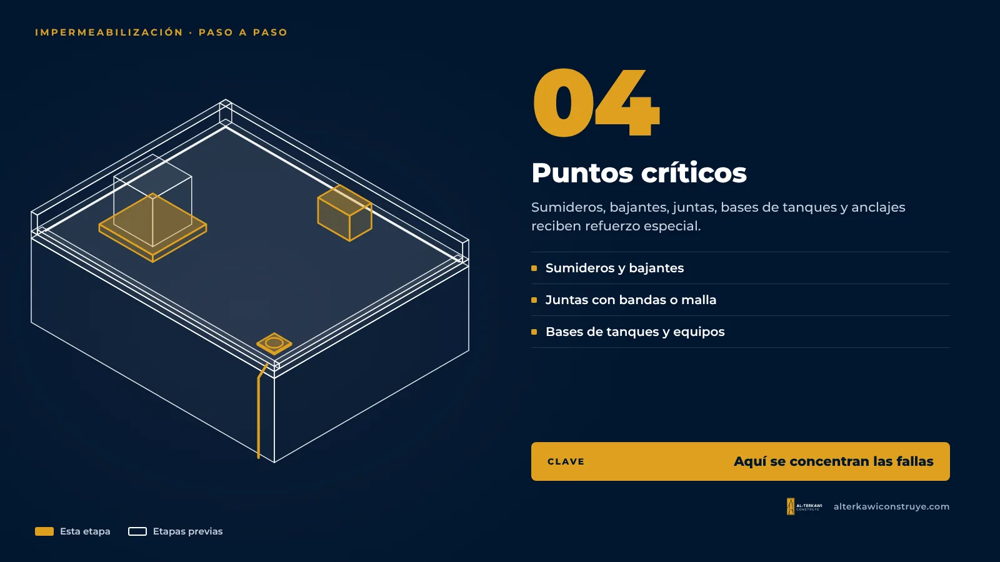
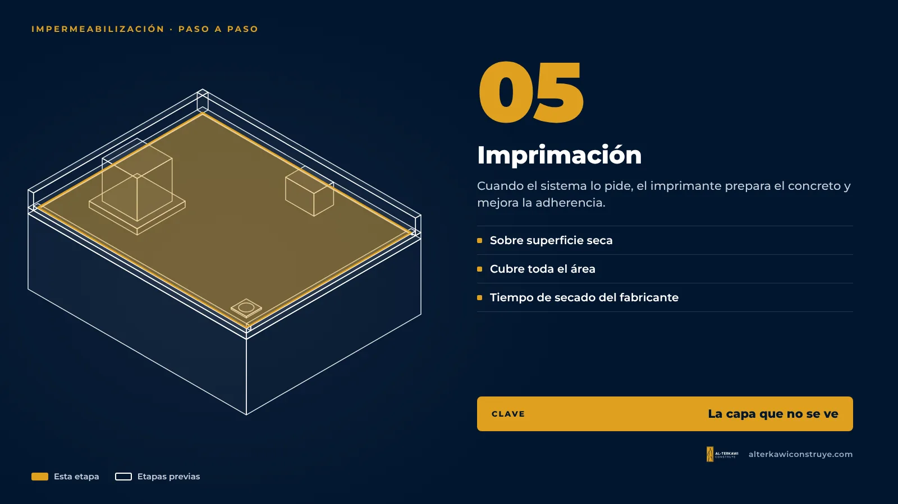
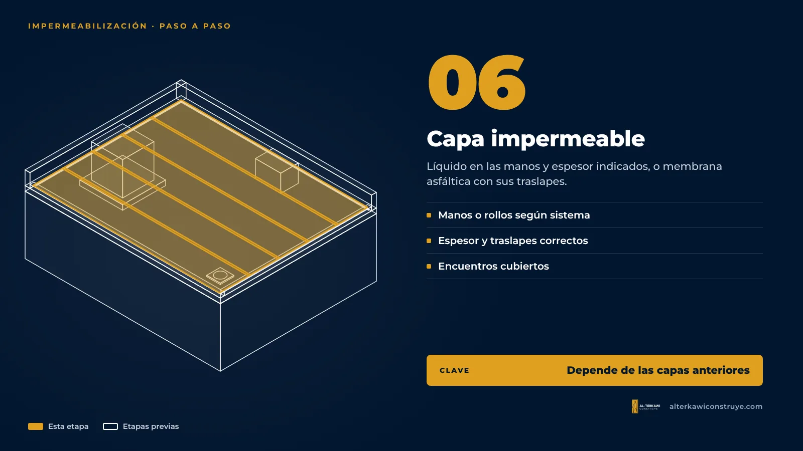
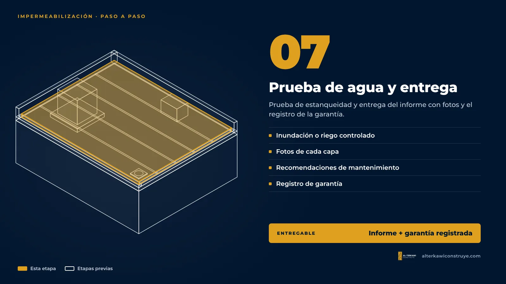

Así se impermeabiliza bien una losa: el proceso capa por capa

La diferencia entre una impermeabilización que dura y una que falla no está solo en el producto. Está en el proceso. Estas son las etapas que seguimos en cada losa; cada una se documenta con fotos para que el cliente vea qué se hizo, aunque luego quede cubierto.
Etapa 1 — Diagnóstico y medición

Se identifica la causa de las goteras, se mide el área real, se revisan pendientes, sumideros y puntos críticos, y se define el sistema adecuado.
Etapa 2 — Limpieza y retiro de lo que no sirve

Se retira la impermeabilización vieja que está suelta o levantada, el polvo, la grasa y la vegetación. Una superficie sucia es la causa número uno de falta de adherencia.
Etapa 3 — Reparación de la superficie

Se abren y rellenan las fisuras, se corrigen los desniveles donde se empoza el agua y se forman medias cañas en los encuentros entre la losa y las paredes.
Etapa 4 — Tratamiento de puntos críticos

Sumideros, bajantes, juntas, bases de tanques y anclajes reciben refuerzo especial (bandas, malla o piezas según el sistema). Aquí se concentra la mayoría de las fallas cuando se trabaja sin cuidado.
Etapa 5 — Imprimación

Cuando el sistema lo pide, se aplica un imprimante que prepara el concreto y mejora la adherencia de la capa impermeable.
Etapa 6 — Capa impermeable

Se aplica el impermeabilizante líquido en las manos y el espesor indicados, o se instala la membrana asfáltica con sus traslapes. Es la capa que se ve, pero depende de que las anteriores estén bien hechas.
Etapa 7 — Prueba de agua y entrega

Se hace una prueba de estanqueidad (inundación o riego controlado) cuando la losa lo permite. Después se entrega un informe con fotos de cada capa, recomendaciones de mantenimiento y el registro de la garantía.
Por qué te mostramos cada capa
Porque una impermeabilización se esconde a sí misma: al terminar solo ves la capa final. El registro fotográfico es tu prueba de que el sistema se aplicó completo.
Siga leyendo

¿Quieres ver cómo quedaría tu losa?
Diagnóstico con informe fotográfico, propuesta por etapas y garantía registrada al terminar.

Arquitecto en Guayaquil, Samborondón y Daule. Impermeabilización de losas y cubiertas con garantía, diseño y obra.